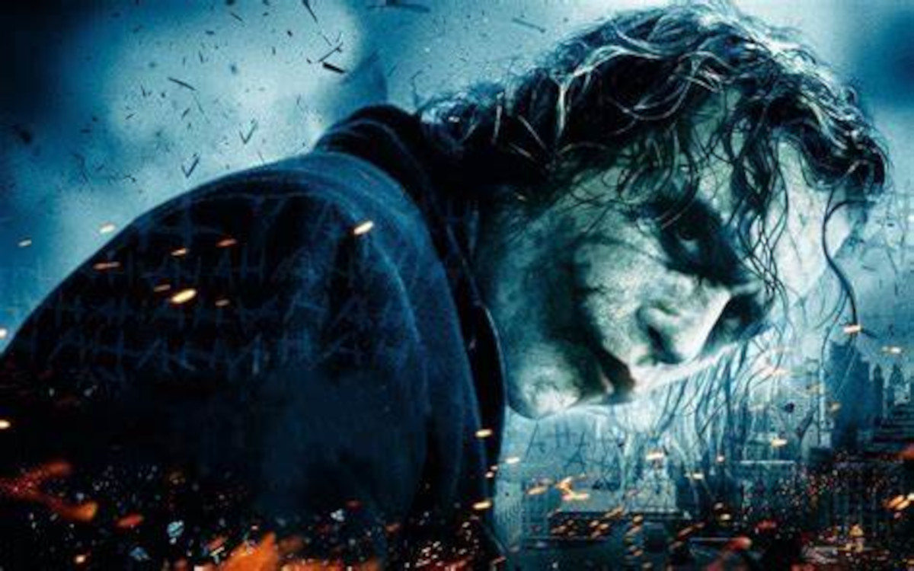

JOKER
Em O Homem do Capuz Vermelho, Batman vai dar aula em uma universidade e conta um caso que ele não conseguiu resolver. Nele, um assaltante que o personagem perseguia em uma fábrica de baralhos caiu em um tonel com produtos químicos e sumiu. No final, revela-se que o criminoso era Coringa.
